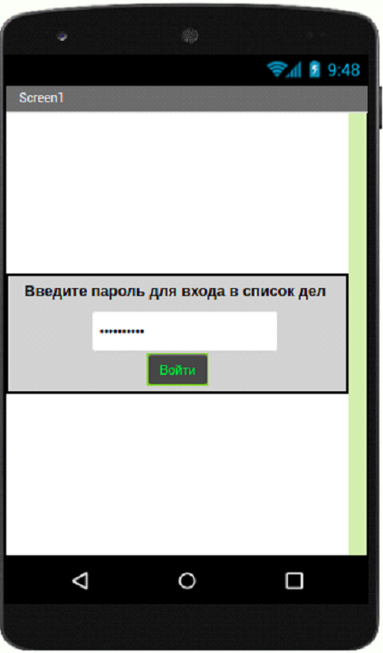
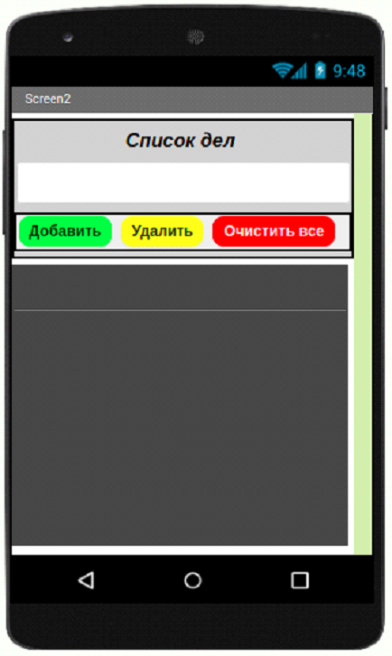

<link rel="stylesheet" href="projectStyle.css">

<section class="project-container">
	<div class="project-container__logo">
		
	</div>
	
	<p class="project-name">Проект 7: Приложени “Список дел”</p>
	<div class="description-block">
		<article class="description-block__text">
			<div class="logos">
				<!--  -->
			</div>
			
			<p>
				В настоящее время мы получаем очень много информации из окружающего мира и из-за этого часто забываем о
				делах которые нам поручили.
			</p>
			<p>
				Для того чтобы больше не забывать о ваших делах на день мы создадим приложение в которое сможем записать все
				цели на день и отмечать их как выполненные.
			</p>
			<p>С этим приложением вы перестанете забывать о делах, если будете каждое утро их записывать.</p>

			<p>Задача:</p>
			<p>
				Создать приложение которое позволит нам записывать наш список дел на день. Приложени должно состоять
				из двух экранов. В первом экране будет находится окно входа. Если пароль введен неправильно, то на экране
				появится уведомление о том, что мы ошиблиь с вводом пароля.
			</p>
			<p>Во втором экране будет находится интерфейс добавления дел в список.</p>

			<p>Требования Экран 1</p>
			<ul>
				<li>Создать блок для ввода пароля</li>
				<li>Создать кнопку для входа</li>
			</ul>
			<p>Требования Экран 2</p>
			<ul>
				<li>Создать текстовое поле для ввода дел</li>
				<li>Создать кнопку добавить</li>
				<li>Создать кнопку удалить</li>
				<li>Создать кнопку очистить все</li>
			</ul>

			<p>Компоненты</p>
			<p>Экран 1: Надпись, Пароль, Кнопка, Уведомитель</p>
			<p>Экран 2: Надпись, Текст, Кнопка, Список</p>

			<div class="description-block__image">
				
				
			</div>
		</article>
	</div>
</section>